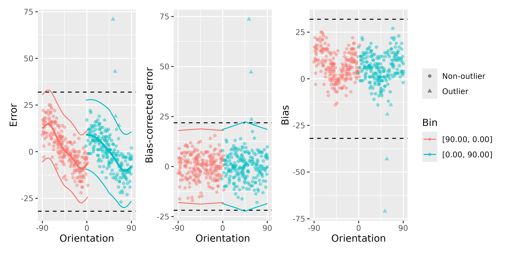
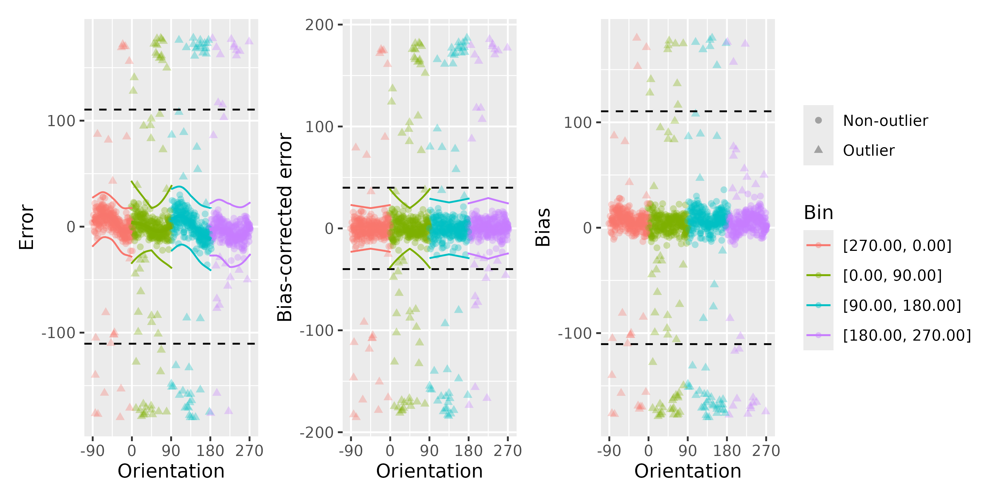

Remove cardinal biases
Usage
remove_cardinal_biases(
err,
x,
space = "180",
bias_type = "fit",
plots = "hide",
poly_deg = 4,
var_sigma = TRUE,
var_sigma_poly_deg = 4,
reassign_at_boundaries = TRUE,
reassign_range = 2,
break_points = NULL,
init_outliers = NULL,
debug = FALSE,
do_plots = NULL
)Arguments
- err
a vector of errors, deviations of response from the true stimuli
- x
a vector of true stimuli in degrees (see space)
- space
circular space to use (a string:
180or360)- bias_type
bias type to use (
fit,card,obl, orcustom, see details)- plots
a string
hide,show, orreturnto hide, show, or return plots (default:hide)- poly_deg
degree of the fitted polynomials for each bin (default: 4)
- var_sigma
allow standard deviation (width) of the fitted response distribution to vary as a function of distance to the nearest cardinal (default: True)
- var_sigma_poly_deg
degree of the fitted polynomials for each bin for the first approximation for the response distribution to select the best fitting model (default: 4)
- reassign_at_boundaries
select the bin for the observations at the boundaries between bins based on the best-fitting polynomial (default: True)
- reassign_range
maximum distance to the boundary at which reassignment can occur (default: 2 degrees)
- break_points
can be used to assign custom break points instead of cardinal/oblique ones with
bias_typeset tocustom(default: NULL)- init_outliers
a vector determining which errors are initially assumed to be outliers (default: NULL)
- debug
print some extra info (default: False)
- do_plots
deprecated, use the parameter
plotsinstead
Value
If plots=='return', returns the three plots showing the biases
(combined together with patchwork::wrap_plots()). Otherwise, returns a list with the following elements:
is_outlier - 0 for outliers (defined as
±3*pred_sigmafor the model with varying sigma or as±3\*SDfor the simple model)pred predicted error
be_c error corrected for biases (
be_c = observed error - pred)which_bin the numeric ID of the bin that the stimulus belong to
bias the bias computed as described above
bias_typ bias type (cardinal or oblique)
pred_lin predicted error for a simple linear model for comparison
pred_sigma predicted SD of the error distribution
coef_sigma_int, coef_sigma_slope intercept and slope for the sigma prediction
Details
If the bias_type is set to fit, the function computes the cardinal biases in the following way:
Create two sets of bins, splitting the stimuli vector into bins centered at cardinal and at oblique directions.
For each set of bins, fit a nth-degree polynomial for the responses in each bin, optionally allowing the distribution of responses to vary in width as a function of distance to the nearest cardinal (regardless of whether the bins are centered at the cardinal or at the oblique, the width of the response distribution usually increases as the distance to cardinals increase).
Choose the best-fitting model between the one using cardinal and the one using oblique bins.
Compute the residuals of the best-fitting model - that's your bias-corrected error - and the biases (see below).
The bias is computed by flipping the sign of errors when the average predicted error is negative, so, that, for example, if on average the responses are shifted clockwise relative to the true values, the trial-by-trial error would count as bias when it is also shifted clockwise.
If bias_type is set to obl or card, only one set of bins is used, centred at cardinal or oblique angles, respectively.
For additional examples see the help vignette:
vignette("cardinal_biases", package = "circhelp")
References
Chetverikov, A., & Jehee, J. F. M. (2023). Motion direction is represented as a bimodal probability distribution in the human visual cortex. Nature Communications, 14(7634). doi:10.1038/s41467-023-43251-w
van Bergen, R. S., Ma, W. J., Pratte, M. S., & Jehee, J. F. M. (2015). Sensory uncertainty decoded from visual cortex predicts behavior. Nature Neuroscience, 18(12), 1728–1730. doi:10.1038/nn.4150
Examples
# Data in orientation domain from Pascucci et al. (2019, PLOS Bio),
# https://doi.org/10.5281/zenodo.2544946
ex_data <- Pascucci_et_al_2019_data[observer == 4, ]
remove_cardinal_biases(ex_data$err, ex_data$orientation, plots = "show")

#> is_outlier pred be_c which_bin bias bias_type pred_lin
#> <num> <num> <num> <num> <num> <char> <num>
#> 1: 0 7.9231406 -4.9231406 2 3 obl 7.7417971
#> 2: 0 -0.1308394 1.1308394 2 -1 obl -0.3993174
#> 3: 0 1.2207704 -4.2207704 2 -3 obl 0.6511490
#> 4: 0 -8.7810566 10.7810566 1 -2 obl -9.8423470
#> 5: 0 -8.6973985 0.6973985 2 8 obl -6.1768825
#> ---
#> 436: 0 -2.1183875 1.1183875 1 1 obl -1.2501447
#> 437: 0 -8.6734938 -10.3265062 2 19 obl -11.1665978
#> 438: 1 -7.5719139 21.5719139 2 -14 obl -5.3890327
#> 439: 0 1.5455219 -2.5455219 2 -1 obl 0.9137656
#> 440: 0 -1.5454397 0.5454397 2 1 obl -1.4497838
#> pred_sigma coef_sigma_int coef_sigma_slope shifted_x total_log_lik
#> <num> <num> <num> <num> <num>
#> 1: 6.581614 2.008436 -0.0041385327 15 -1439.084
#> 2: 7.420878 2.008436 -0.0041385327 46 -1439.084
#> 3: 7.359709 2.008436 -0.0041385327 42 -1439.084
#> 4: 6.048106 1.835112 -0.0009307184 -7 -1439.084
#> 5: 6.775070 2.008436 -0.0041385327 68 -1439.084
#> ---
#> 436: 6.202017 1.835112 -0.0009307184 -34 -1439.084
#> 437: 6.262739 2.008436 -0.0041385327 87 -1439.084
#> 438: 6.859711 2.008436 -0.0041385327 65 -1439.084
#> 439: 7.329313 2.008436 -0.0041385327 41 -1439.084
#> 440: 7.299043 2.008436 -0.0041385327 50 -1439.084
# Data in motion domain from Bae & Luck (2018, Neuroimage),
# https://osf.io/2h6w9/
ex_data_bae <- Bae_Luck_2018_data[subject_Num == unique(subject_Num)[5], ]
remove_cardinal_biases(ex_data_bae$err, ex_data_bae$TargetDirection,
space = "360", plots = "show"
)
#> is_outlier pred be_c which_bin bias bias_type pred_lin
#> <num> <num> <num> <num> <num> <char> <num>
#> 1: 1 -8.170082 177.570082 4 -169.40 obl -4.9493375
#> 2: 0 -4.274308 -1.725692 4 6.00 obl -3.4904611
#> 3: 1 -1.536582 179.086582 4 -177.55 obl -2.3017470
#> 4: 0 -8.127875 -32.872125 4 41.00 obl -5.5977270
#> 5: 1 -12.621761 -162.328239 3 174.95 obl -10.0644723
#> ---
#> 1276: 0 -3.467410 -2.532590 3 6.00 obl -3.1784946
#> 1277: 0 -0.857953 2.857953 2 -2.00 obl -0.9756321
#> 1278: 0 -1.282251 -12.017749 2 13.30 obl -2.8733208
#> 1279: 0 -2.482519 9.482519 4 -7.00 obl -2.7340066
#> 1280: 1 5.470358 -181.670358 1 -176.20 obl 10.9248285
#> pred_sigma coef_sigma_int coef_sigma_slope shifted_x total_log_lik
#> <num> <num> <num> <num> <num>
#> 1: 13.29616 2.556561 0.0034349606 234.0 -4999.393
#> 2: 13.71362 2.556561 0.0034349606 207.0 -4999.393
#> 3: 14.79011 2.556561 0.0034349606 185.0 -4999.393
#> 4: 13.85567 2.556561 0.0034349606 246.0 -4999.393
#> 5: 15.11852 2.757918 -0.0009766969 178.0 -4999.393
#> ---
#> 1276: 15.50735 2.757918 -0.0009766969 152.0 -4999.393
#> 1277: 27.85360 3.482895 -0.0219623385 52.1 -4999.393
#> 1278: 13.37544 3.482895 -0.0219623385 85.5 -4999.393
#> 1279: 14.38922 2.556561 0.0034349606 193.0 -4999.393
#> 1280: 14.03739 3.163758 -0.0133854689 -84.0 -4999.393
# Using a stricter initial outlier boundary
remove_cardinal_biases(ex_data_bae$err, ex_data_bae$TargetDirection,
space = "360", plots = "show",
init_outliers = abs(ex_data_bae$err) > 60
)

#> is_outlier pred be_c which_bin bias bias_type pred_lin
#> <num> <num> <num> <num> <num> <char> <num>
#> 1: 1 -9.113946 178.513946 4 -169.40 obl -4.710449
#> 2: 0 -2.806203 -3.193797 4 6.00 obl -3.476563
#> 3: 1 -2.094947 179.644947 4 -177.55 obl -2.471175
#> 4: 1 -8.951250 -32.048750 4 41.00 obl -5.258842
#> 5: 1 -11.247061 -163.702939 3 174.95 obl -9.952609
#> ---
#> 1276: 0 -4.297750 -1.702250 3 6.00 obl -3.147991
#> 1277: 0 -3.552364 5.552364 2 -2.00 obl -1.006986
#> 1278: 0 -1.312257 -11.987743 2 13.30 obl -3.046211
#> 1279: 0 -1.224265 8.224265 4 -7.00 obl -2.836771
#> 1280: 1 6.492975 -182.692975 1 -176.20 obl 11.762122
#> pred_sigma coef_sigma_int coef_sigma_slope shifted_x total_log_lik
#> <num> <num> <num> <num> <num>
#> 1: 9.563944 2.296165 -0.004240535 234.0 -4106.563
#> 2: 9.205815 2.296165 -0.004240535 207.0 -4106.563
#> 3: 8.385832 2.296165 -0.004240535 185.0 -4106.563
#> 4: 9.089444 2.296165 -0.004240535 246.0 -4106.563
#> 5: 9.677623 2.137990 0.003065721 178.0 -4106.563
#> ---
#> 1276: 8.936174 2.137990 0.003065721 152.0 -4106.563
#> 1277: 7.358394 1.892981 0.014487437 52.1 -4106.563
#> 1278: 11.937946 1.892981 0.014487437 85.5 -4106.563
#> 1279: 8.675195 2.296165 -0.004240535 193.0 -4106.563
#> 1280: 7.510183 1.892083 0.003184029 -84.0 -4106.563
# We can also use just one bin by setting `bias_type` to custom
# and setting the `break_points` at the ends of the range for x
remove_cardinal_biases(ex_data_bae$err, ex_data_bae$TargetDirection,
space = "360", bias_type = "custom",
break_points = c(-180, 180), plots = "show",
reassign_at_boundaries = FALSE, poly_deg = 8,
init_outliers = abs(ex_data_bae$err) > 60
)
#> is_outlier pred be_c which_bin bias bias_type pred_lin
#> <num> <num> <num> <num> <num> <char> <num>
#> 1: 1 -9.3547551 178.7547551 1 -169.40 custom -0.3342663
#> 2: 0 -2.5809200 -3.4190800 1 6.00 custom -0.3327065
#> 3: 1 -4.4192576 181.9692576 1 -177.55 custom -0.3314355
#> 4: 1 -9.5398446 -31.4601554 1 41.00 custom -0.3349595
#> 5: 1 -7.0169649 -167.9330351 1 174.95 custom -0.3310311
#> ---
#> 1276: 0 -5.0038536 -0.9961464 1 6.00 custom -0.3295290
#> 1277: 0 -3.9178042 5.9178042 1 -2.00 custom -0.3237577
#> 1278: 0 0.6855594 -13.9855594 1 -13.30 custom -0.3256872
#> 1279: 0 -1.6660057 8.6660057 1 -7.00 custom -0.3318977
#> 1280: 1 4.0545242 -180.2545242 1 -176.20 custom -0.3366927
#> pred_sigma coef_sigma_int coef_sigma_slope shifted_x total_log_lik
#> <num> <num> <num> <num> <num>
#> 1: 8.778540 2.164489 0.0001448273 -126.0 -4139.606
#> 2: 8.744280 2.164489 0.0001448273 -153.0 -4139.606
#> 3: 8.716463 2.164489 0.0001448273 -175.0 -4139.606
#> 4: 8.793810 2.164489 0.0001448273 -114.0 -4139.606
#> 5: 8.712677 2.164489 0.0001448273 -182.0 -4139.606
#> ---
#> 1276: 8.745546 2.164489 0.0001448273 -208.0 -4139.606
#> 1277: 8.872999 2.164489 0.0001448273 -307.9 -4139.606
#> 1278: 8.830182 2.164489 0.0001448273 -274.5 -4139.606
#> 1279: 8.726568 2.164489 0.0001448273 -167.0 -4139.606
#> 1280: 8.832100 2.164489 0.0001448273 -84.0 -4139.606